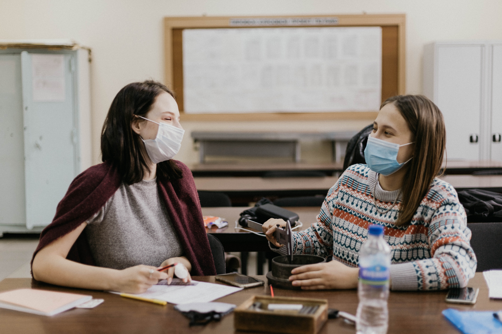

Secondary
Secondary school education is one of the most vital phase in the whole school life of a child. In the first part of the secondary school children are prepared to coin own thoughts and judge their ideas with proper logical visions and reasons. We believe in providing opportunity to the students to have their own thoughts. We also guide them how they can evaluate their ideas.
The second phase of the secondary school education is challenged by a number of physical and emotional changes in students. In this situation they are exposed to a number of temptations, which may lead to adolescent deviation. We provide proper counseling besides helping them in acquiring better skills.
The Secondary school curriculum is based on schools general academic aims of developing critical thinking, enquiry and problem solving, giving them excellent preparation for their next steps in education. The program prepares students for the rigorous academic demands in Class IX and X. it is designed to ensure that students have a smooth transition to Senior School.